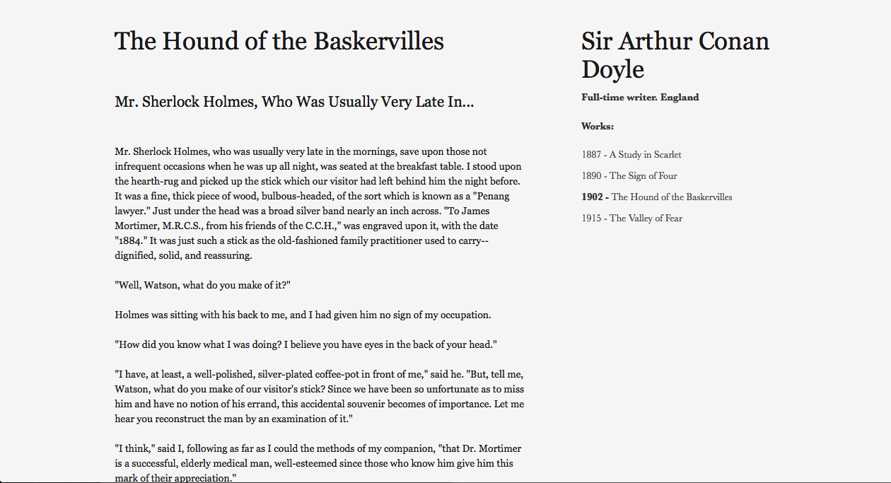

12 Apr 2013 | Writing a lengthy research paper of the Pharaoh's of Ancient Egypt. Decided to work on learning jQuery as my next project towards Web Dev. mastery.
11 Apr 2013 | Writing all day. Tweaking Minimal Write project on Git, etc.
10 Apr 2013 | Reading about Globalization. Starting a new project. A minimalist website for writers.
09 Apr 2013 | Looking at Bitters website layout. Hanging out on campus for free wifi.
08 Apr 2013 | Assimil arrived in the mail today. Onward towards fluency!
07 Apr 2013 | Drinking Tea. Might experiment with Docpad today. Writing.
06 Apr 2013 | Went to a Scottish Festival all day on the Missouri River. Listening to the sounds of bagpipes and cannon fire.
and Peer Production. ...Hello
09 Apr 2013 |
I thought it would be a nice change of scenery, to add some thoughts to the site in the realm of longer posts. I won't be getting rid of the Life Stream. I think it gives people a way to see into what a person does day to day in a snapshot. While longer posts give more whole images of what people feel and think.
The Life Stream has gotten a major overhaul if you haven't noticed. From now on and into eternity, it will only show posts for the past week. Then *poof!* they dissapear into a pile of glittery fairy dust.
Although I'm not truely sure how long these thought posts will be living, before they too expire into glittery magic. I might keep them on for a few weeks, maybe a month. It all depends on frequency.
For those of you that wonder why these posts burst into magicky goodness, instead of living on forever. I say this:
What better gift can one give, than to let another live? These posts collapse into nothingness, so that other's can live. Don't stay on the web all day. Go out and truely experience life.
Notes
Everything on this site poofs into magical fairy dust. Check back often, you never know when things might just disappear.Current Project
Right now I'm currently working on MinimalWrite, a website for authors that mimicks an e-reader screen for easy reading. It will include an author's bio, interview clips or ambient sounds for the reader etc.
Here's a preivew of the beta version:


Hi, I'm Meira.
Learning the Dark Arts of Web Developement, in a small town where wifi is a rare link to the outside world.
Interesting Reading: Gwen Bell ,ZenHabits , Mnmlist